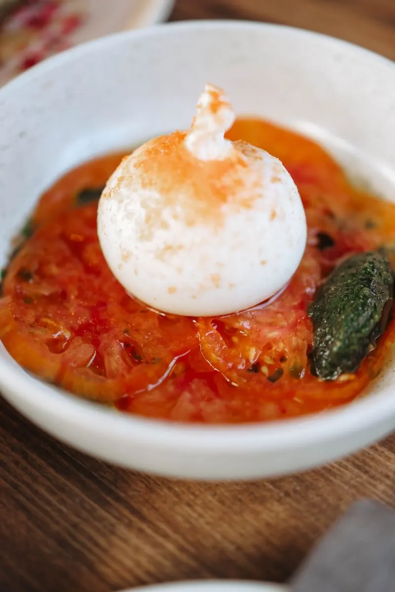
To Begin
Burrata Pomodoro
Creamy burrata, ripe tomato, basil — the plate that defines indulgence.
Southern Italian · Fine Dining · Gulberg, Lahore
Wood-fired pizza, handmade pasta and slow risotto, served in a warm, candlelit room on College Road — the Lahore dining room of a kitchen that first made its name in Islamabad.
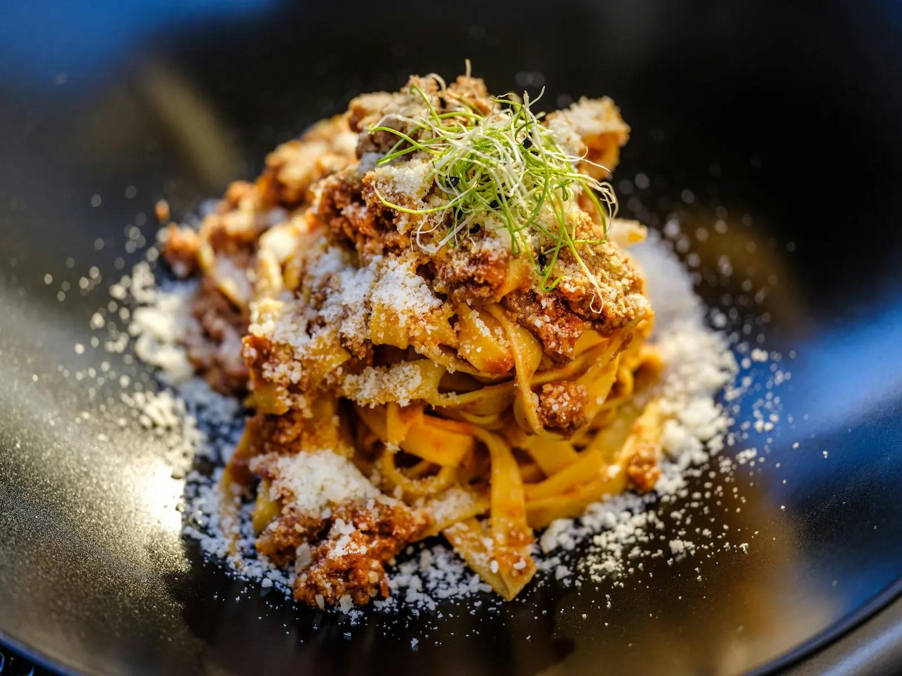
02 — Signatures

To Begin
Creamy burrata, ripe tomato, basil — the plate that defines indulgence.
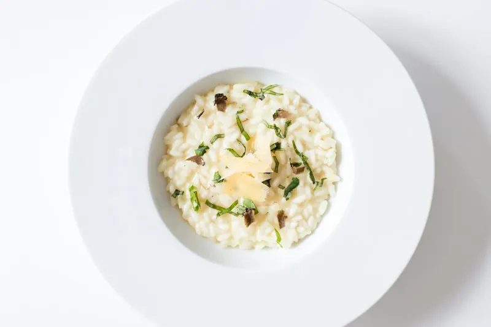
Pasta & Risotto
Slow-stirred, deeply savoury — the risotto diners name first.
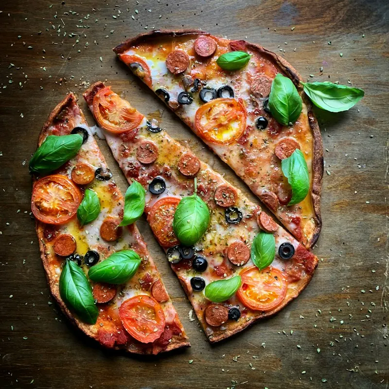
From the Fire
Blistered in the wood oven — the pizza Fuoco is most praised for.
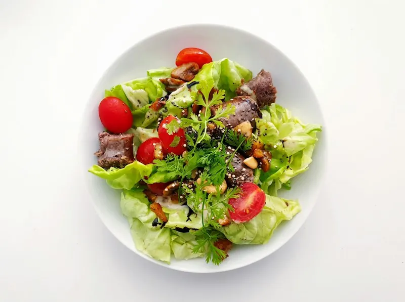
To Begin
Grilled steak over fresh greens — the lighter start to a long dinner.
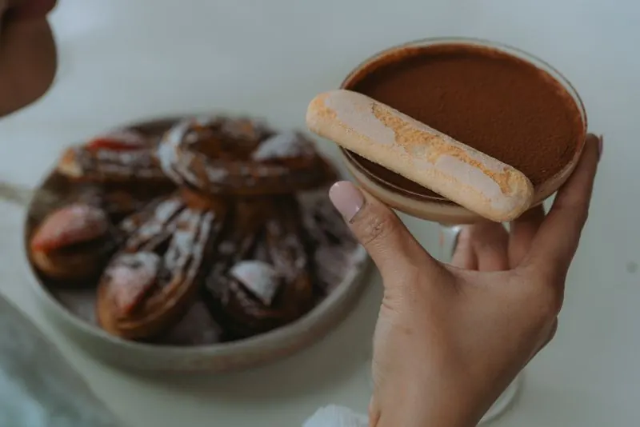
Dolci
Coffee-soaked, mascarpone-soft — the classic Italian finish.
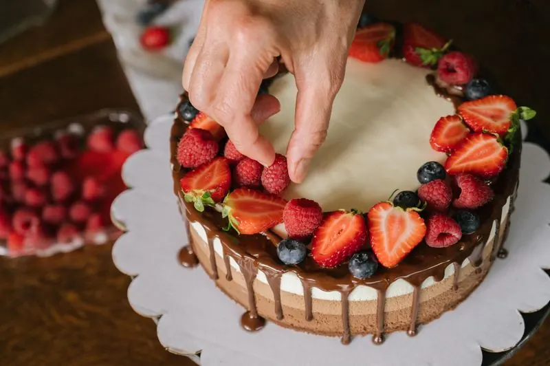
Dolci
The dessert the Lahore review closed dinner with — and remembered.
03 — The Fire
Fuoco means fire — and the wood oven is the centre of the kitchen. Dough is stretched to order, pies go in pale and come out blistered, and the room smells of it from the door.
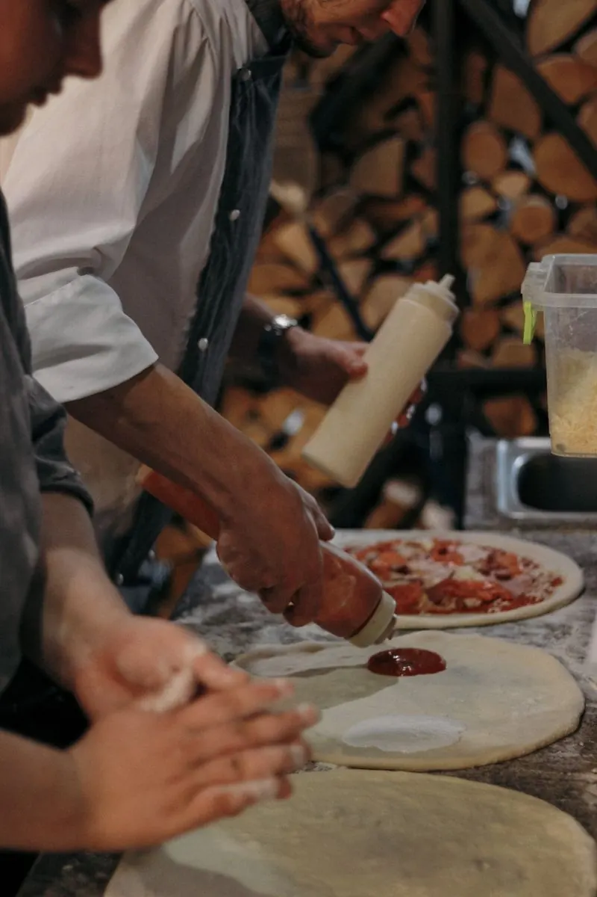
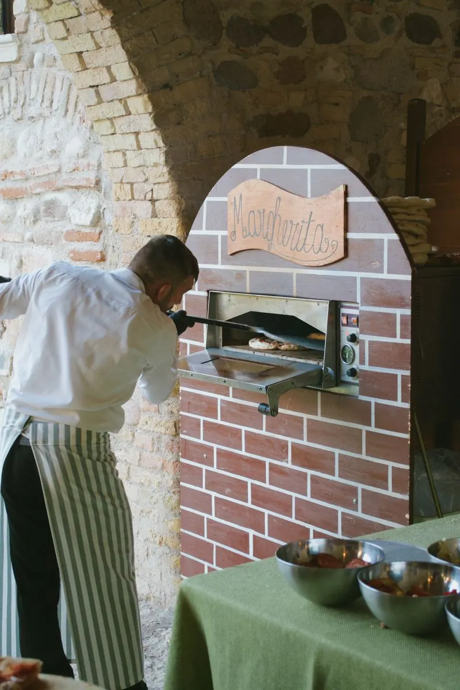
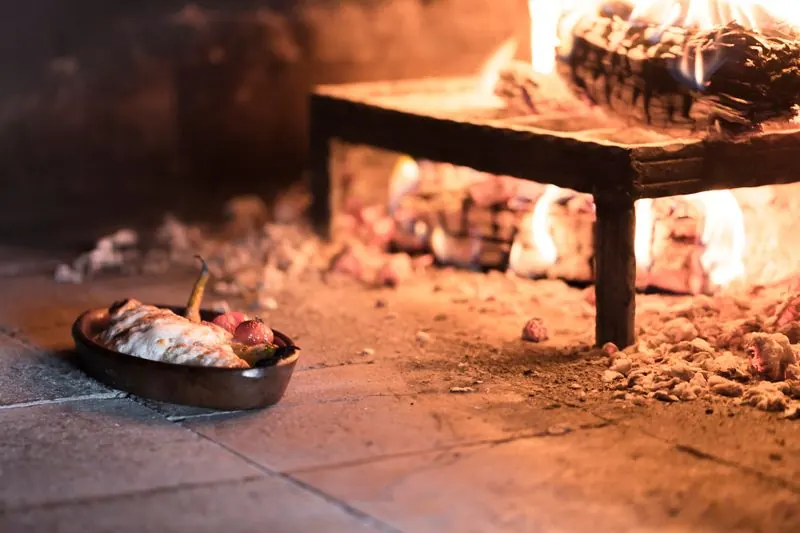
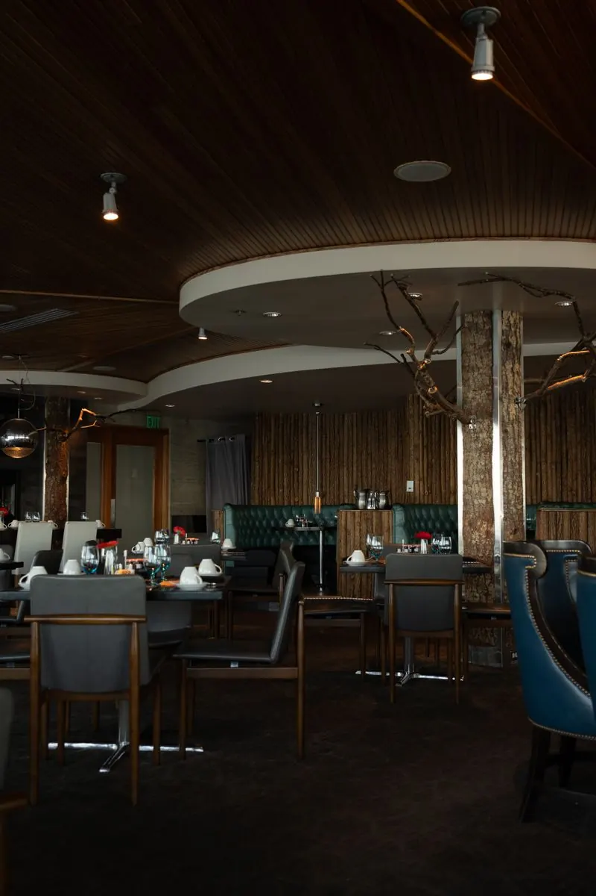
04 — The Dining Room
Step inside and the first thing you notice is the ambience: warm, elegant and softly lit, with minimal, tasteful décor. Reviewers call it the right room for a special occasion — intimate enough for two, comfortable enough for the whole family.
Tables are set for long dinners. Courses arrive to share, the coffee comes last, and nobody is hurried out the door.
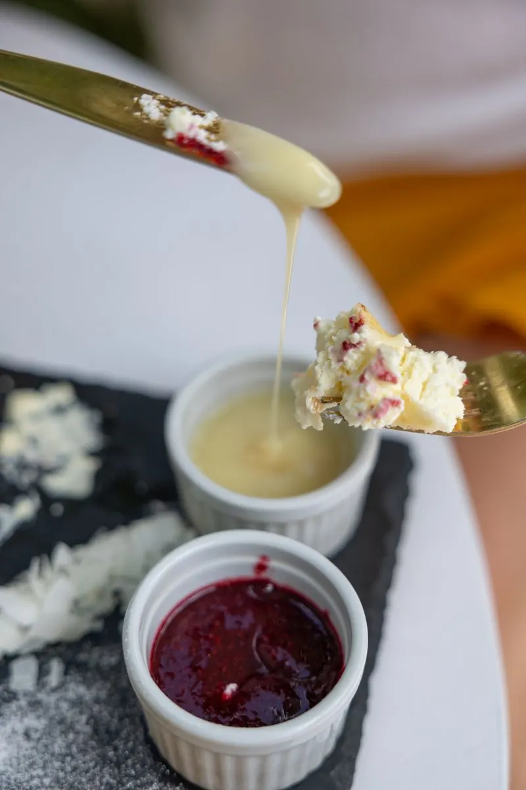
05 — Why Gulberg Comes Here
Bold, authentic Italian cooking — reviewers compare it favourably with restaurants in New York.
Wood-fired pizza is the dish praised most often, and the reason many first-timers walk in.
Tortellini, mushroom cream pasta and ravioli are singled out again and again.
Warm, elegant and candlelit — the table Lahore books for birthdays, anniversaries and long family dinners.
“Fuoco has successfully transported an authentic taste of Italy to Lahore.”
— The News (TNS), “A taste of Italy”
06 — Evenings
Fuoco opens at 1 PM and runs late into the night — lunch that stretches, dinners that start at dusk. It is built for evenings that are planned around the table, not squeezed in before it.
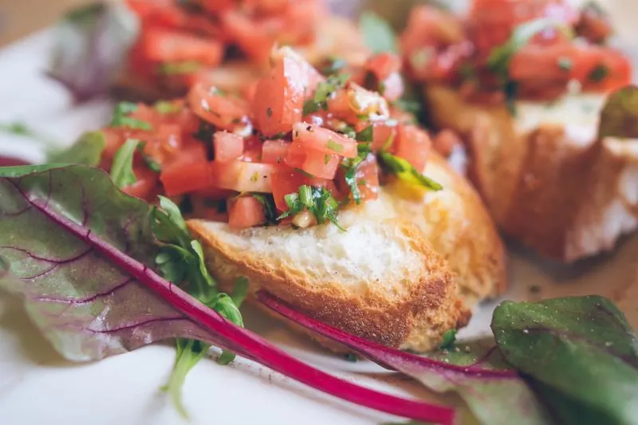
07 — Gallery
Tap any photograph to view it full-size.
08 — Visit
Phone 0305 2101111
Instagram @fuoco.restaurants
| Monday – Thursday | 1:00 PM – 11:00 PM |
|---|---|
| Friday – Sunday | 1:00 PM – 12:00 AM |
Hours can vary — call ahead to confirm before you set out.
09 — Good to Know
Fuoco is a popular Gulberg table, especially on weekend evenings. Calling ahead on 0305 2101111 is the surest way to secure a table.
Wood-fired pizza and handmade pasta — tortellini Bolognese, mushroom risotto and truffle risotto are the dishes reviewers name most, with burrata pomodoro to start and tiramisu or cheesecake to finish.
Honestly, this is fine dining: reviewers describe the cooking as excellent and the portions as modest for the price. Order across the table — a starter, a pizza and a pasta to share — and the evening works out well.
Yes — reviewers regularly book it for family dinners, birthdays and anniversaries. The room is warm and unhurried, and the menu has something for every seat at the table.
Delivery and takeaway are not confirmed on any public listing. Call the restaurant on 0305 2101111 to ask before ordering.
6-A, 2 College Road, Block Q, Gulberg, Lahore — on College Road in the heart of Gulberg, a short drive from MM Alam Road.
Reserve a Table
Call the restaurant to reserve — evenings fill up, and the pizza is worth planning around.